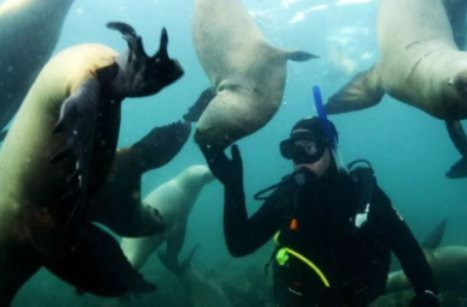
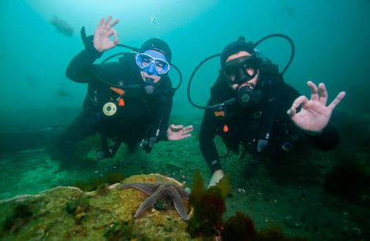
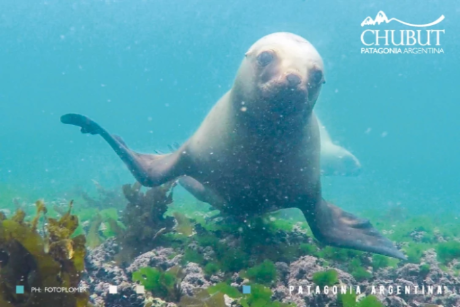
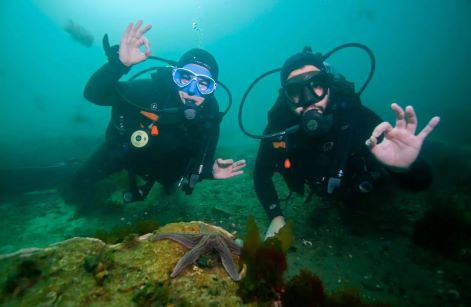
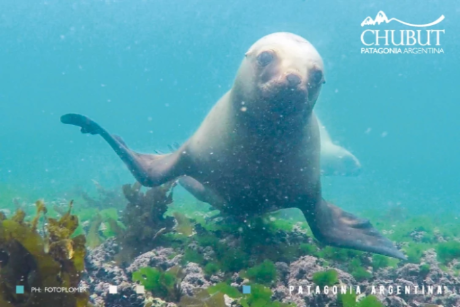
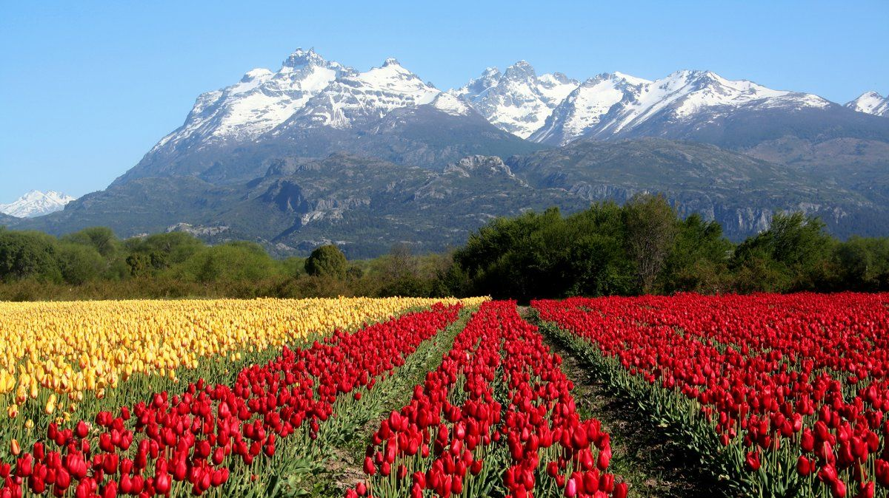
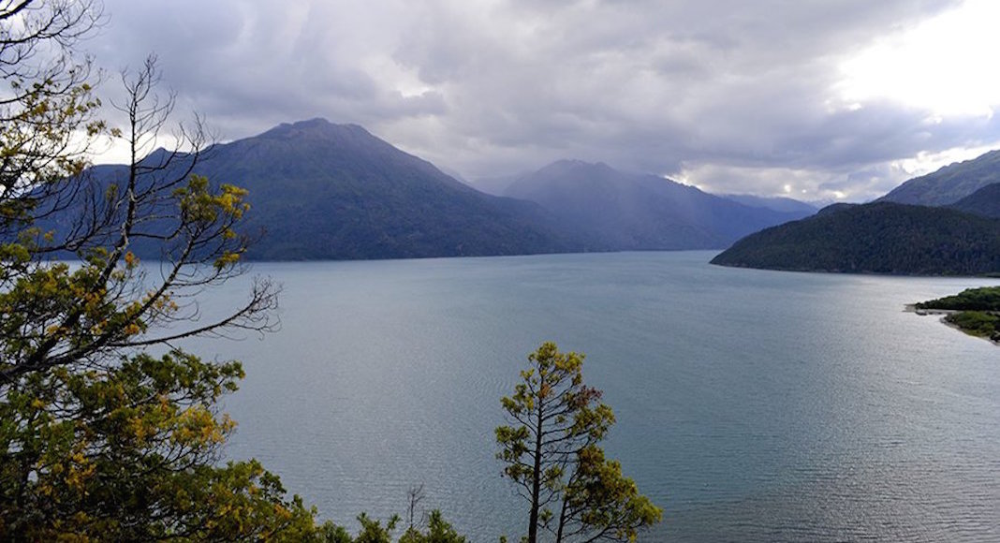

CHUBUT
Chubut es una provincia de la Patagonia argentina ubicada en vastas llanuras entre la cordillera de los Andes y el océano Atlántico. La remota península Valdés alberga ballenas francas australes, elefantes marinos y pingüinos. La ciudad de Puerto Madryn se ubica en la playa y es una vía de acceso a la península Valdés y a Punta Tombo, que alberga una colonia de crianza de pingüinos de Magallanes.
Comienza a soñar tu próxima experiencia.
Snorkelling con lobos marinos en Puerto Madryn
EXPERIENCIA:
Al ver la lancha ya se tiran al agua curiosear. Y antes de que te tires al agua ya se están divirtiendo: cuando ya te zambulliste, los lobos marinos se acercan inquietos por tu presencia, te rozan, expectantes y muy simpáticos, y proponen juegos, esperando tu reacción.
El espectáculo bajo el agua es difícil de creer: en un mar verde azulado, lobos jugueteando al ritmo de los rayos del sol que atraviesan el océano. Afuera, un acantilado y más lobos, entre cormoranes y gaviotines.
Adonde te muevas, te sigue una manada de lobos que te imitan (dejando escapar burbujas como vos con tu snorkel). Son tan amigables y curiosos que quieren compartir su mundo con vos.
Atrás quedó la media hora de navegación por el Golfo Nuevo: acantilados, playas de ensueño y Puerto Madryn a lo lejos. Atrás quedó el miedo por el frío del agua, con un traje de neoprene que mantiene la temperatura y te permite flotar sin esfuerzo. Y el temor de quien no sabe nadar, algo que no necesitaba para disfrutar de una experiencia con la vida salvaje única en el mundo.

  
 
Campo de Tulipanes y Peonías
El Campo de Tulipanes es un atractivo único en Argentina, con una paleta de colores inigualable.
El Campo de Tulipanes de Trevelin es como un pequeño Keukenhof patagónico que deslumbra no solo por las flores si no por un entorno inigualable
Octubre está marcado en el calendario, es el mes en que florecen los tulipanes de Trevelin. El campo se viste de colores; los cielos azules de la primavera y los picos que aún se coronan de nieve completan el marco.
El Campo de Tulipanes ayuda a revalidar el título de Jardín de la Provincia que distingue a Trevelin. La familia Ledesma abre las puertas de su chacra para que todos puedan disfrutar de esta belleza.
La Visita
La plantación se abre al público durante aproximadamente un mes de 8.00 a 18.00 hs y en la mayoría de los casos, los visitantes llegan en busca de una selfie diferente: nadie sale defraudado.
El campo está ubicado sobre la Ruta 259, en la zona del Área Natural Protegida Nant y Fall y junto a las Viñas de Nant y Fall.
Son 14 kilómetros desde el centro de Trevelin y forma parte del circuito de la Ruta Galesa, una excursión ofrecida por las agencias de viajes y turismo.
También se realizan visitas nocturnas, recomendadas especialmente para todos los aficionados de la fotografía.
Se parte hacia el lugar en horas de la tarde para llegar con los últimos rayos del sol y así obtener las magníficas postales que brindan los coloridos tulipanes, con la cordillera como telón de fondo.
Campo de Peonías
En el mes de Diciembre comienza la floración de esta especie originaria de Asia y que, junto con los tulipanes, regala postales llenas de color a quienes visitan el Cwm Hyfryd (Valle Hermoso).
Sobre la ruta provincial N° 34 que termina en la parte sur del Sur del Parque Nacional Los Alerces, donde se encuentra el Complejo Hidroeléctrico Futaleufú, se puede acceder a varios atractivos entre los cuales se destaca el Campo de Peonías.
Desarrollado con el trabajo de los técnicos del INTA, el campo es administrado por un productor local que recibe a los visitantes para enseñarles la riqueza de esta plantación.
Con la compañía de un guía local, es posible recorrer una plantación con miles de peonías. Las flores van del blanco al rosa furioso, son grandes y muy apreciadas en Asia, de donde son originarias.
Y en el mes de diciembre, esas mismas flores se convierten en insumo para realizar increíbles tapices durante la Fiesta de las Peonías.
La visita dura aproximadamente dos horas y se puede combinar con recorridos en el Río Grande, la Represa Futaleufú o el Té Galés en Trevelin, por citar algunas alternativas.
Paisajes de Tulipanes
Parque Nacional Los Alerces
El Parque Nacional Los Alerces está ubicado en el oeste de la provincia del Chubut. Posee una superficie de 259.570 hectáreas pertenecientes a la ecorregión de Bosques Patagónicos.
El Decreto Nº 105.433 de 1937 fijó para distintos territorios en la Patagonia andina la condición de reservas con destino a la posterior creación de Parques Nacionales. Uno de dichos territorios fue el de la Reserva de los Alerces.
En abril de 1945, a través del Decreto Ley Nº 9504, ratificado por la Ley Nº 13.895, se declaraba Parque Nacional a varias reservas y entre ellas a la Reserva Los Alerces, la cual a partir de ese momento, asumía la categoría de Parque Nacional.
El 7 de julio de 2017 la UNESCO (Organización de las Naciones Unidas para la Educación, la Ciencia y la Cultura) declaró Sitio de Patrimonio Mundial a 188.379 hectáreas del Parque Nacional Los Alerces, de las cuales más de siete mil protegen Bosques Milenarios de Alerces (Fitzroya cupressoides), con ejemplares que alcanzan 2.600 años de existencia.

Parque Nacional Lago Puelo
El origen del nombre del Parque, que se debe al Lago Puelo, deriva de las voces mapuches puel, que significa este, y co, que significa agua.
En el año 1937 el Estado argentino, a través del Decreto Nº 105.433, declaró como reservas con destino a parques nacionales varias zonas andinopatagónicas. Entre ellas se encontraba Los Alerces en la Provincia de Chubut, que contaba con un anexo situado a unos 115 km al norte.
Posteriormente, en 1945, a través del Decreto-Ley Nº 9504 ratificado por Ley Nº 13.895, se declaró Parque Nacional la Reserva Los Alerces manteniendo el Anexo. En el año 1971 la citada Ley 13.895 es modificada por la Nº 19.292 que otorga el estatus de Parque Nacional al, hasta ese momento, Anexo Puelo.
Lago Puelo
Esquel
Esquel posee la combinación ideal entre la Recreación y Eventos.
EXPERIENCIA:
Esquel es la ciudad más importante de la zona cordillerana de Chubut. Cuenta con una importante infraestructura de servicios, con cálidos hoteles, establecimientos gastronómicos de calidad, agencias de turismo receptivo y alquiler de vehículos, y los salones para eventos se encuentran ubicados dentro del centro comercial de la ciudad.
Ofrece hermosos recorridos y excelentes paseos como el viaje en el Viejo Expreso Patagónico “La Trochita”. Además, brinda la posibilidad de practicar esquí en invierno en el Centro de Actividades de Montaña La Hoya.
Esta localidad cordillerana es la puerta de entrada al maravilloso Parque Nacional Los Alerces, y a la pintoresca ciudad de Trevelin. La ciudad y su entorno presentan alternativas para combinar los eventos con la recreación. Todas estas características hacen de Esquel un destino especial para el desarrollo del turismo de reuniones.
ATRACTIVOS TURISTICOS
La ciudad de Esquel es la entrada a una incomparable región cordillerana cuya naturaleza sorprende al viajero durante todas las estaciones del año.
Esquí, trekking, rafting, cabalgatas, montañismo, pesca y tantas actividades como puedan imaginarse en medio de paisajes asombrosos; entre los que se destacan densos bosques, selvas que resguardan árboles milenarios, ríos bravíos y espejos de agua que seducen y sorprenden.
Desde esta ciudad se puede combinar la tranquilidad de los sitios alejados, la belleza de la Cordillera de los Andes, la inmensidad de la estepa patagónica y una rica historia de pueblos originarios e inmigrantes.